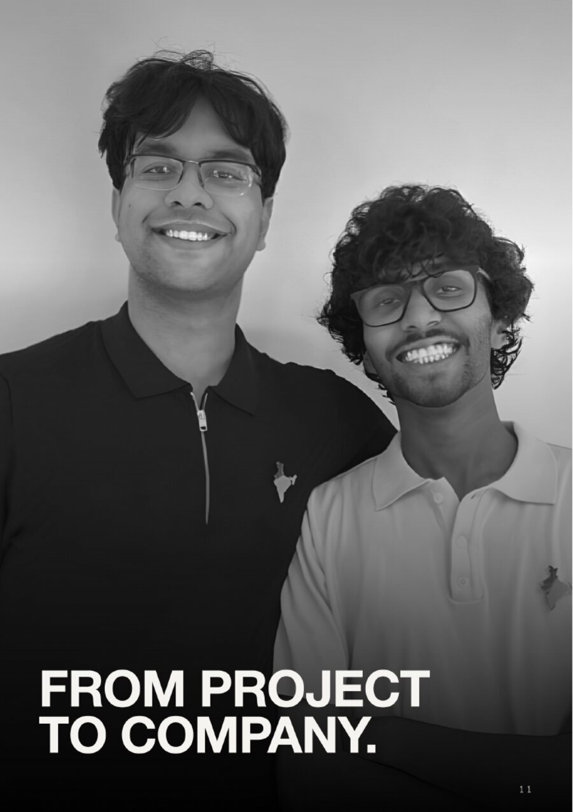
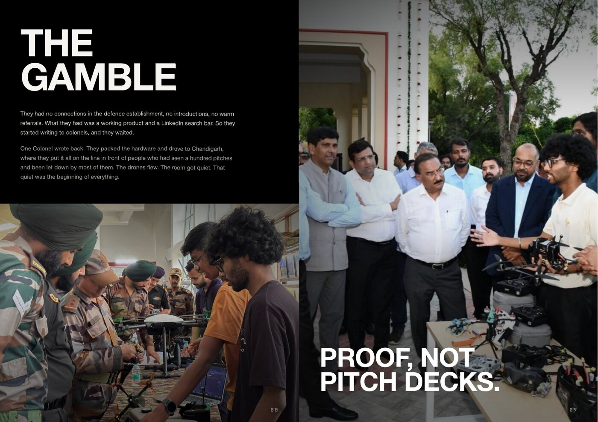
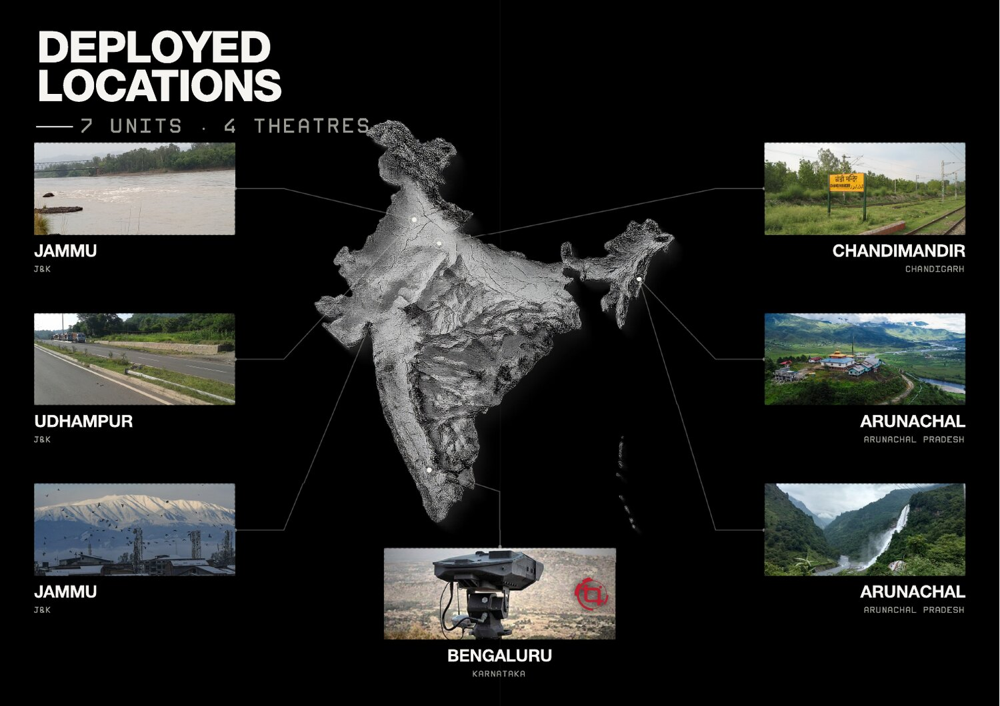
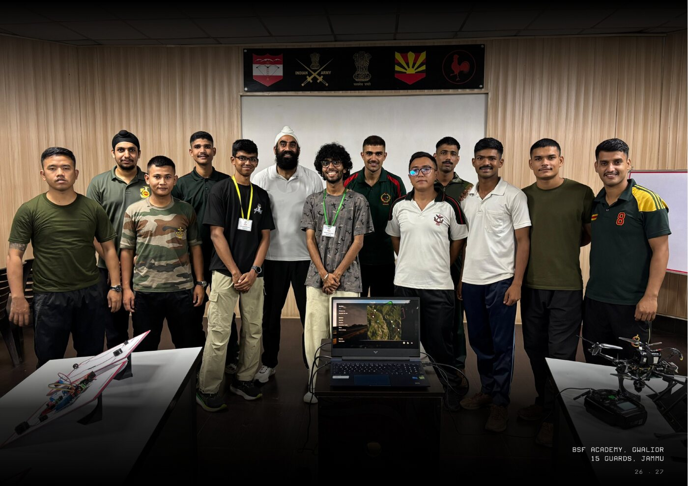

Hostel room to frontline
Apollyon Dynamics began in a student workshop at BITS Pilani Hyderabad. The founders engineered functional airframes, contacted field commands directly, and delivered flyable systems to the Indian Army. Within two months of incorporation, Apollyon was shipping operational hardware to forward units. Today, the company operates as an autonomous systems neo-prime with seventeen engineers across four operational theatres.
Engineering from first principles
Founders Jayant Khatri and Sourya Choudhury cleared their dormitory room at BITS Pilani Hyderabad, installed 3D printers and test benches, and began assembling high-speed airframes. They focused on aerodynamic modeling, custom avionics, and low-latency motor control.
Rather than waiting for incubators or lengthy grant cycles, the team built working systems and demonstrated them directly to military operators. Within two months of formal incorporation in May 2025, Apollyon delivered operational hardware to forward Army units. The dormitory workshop transitioned into a dedicated campus facility, maintaining rapid design turns and direct pilot feedback.

Flight verification over slideware
With no initial institutional backing or defence contacts, the founders contacted field commanders directly with verifiable flight data and onboard telemetry. They offered immediate, unscripted flight demonstrations under local wind and terrain conditions.
Following an invitation from Western Command, the team drove to Chandigarh with prototype hardware. In unscripted trials before senior infantry officers, the aircraft executed autonomous waypoints and high-rate intercepts without telemetry dropouts. That single demonstration converted technical proof into the company's first procurement contract.

A proven track record of execution
Seven units, four theatres


Problem statement and addressable market
Layered surface-to-air missiles and GPS denial deny airspace to slow uncrewed aerial vehicles and impose severe attrition on legacy manned combat aircraft. Apollyon addresses the tactical gap between short-range quadcopters and multimillion-dollar cruise missiles:
| Segment | Size | Composition |
|---|---|---|
| TAM | $47.2B | Armed forces worldwide · NATO forces, Indo-Pacific allies, Middle East · expendable autonomous systems |
| SAM | $12.8B | Indian Army, Navy and Air Force · G2G defence agreements · Make-in-India / iDEX / DTIS |
| SOM | $5B+ | BSF, CRPF, Coast Guard · Indian defence OEMs · expendable platform consumption |
What others have said
Speed of execution and frugal engineering is the great strength of Apollyon Dynamics. Naga Bharath Daka · Co-founder, Skyroot
It's inspiring to see the progress Apollyon Dynamics is making in a demanding sector like defence, especially with its founders still in their third year of engineering. The future looks exceptionally promising. Phanindra Sama · Founder, redBus
Jayant & Sourya are building Apollyon Dynamics by owning the offensive & defensive drone stack from the ground up. That's what makes it interesting. Sanjay Nekkanti · Dhruva Space
We saw Jayant & Sourya evolve from first-year hobbyists into entrepreneurs building sophisticated defence solutions from India for the world. Their ability to learn fast, execute with discipline, and hold a long-term vision is rare at this age. Vikas Katragadda · Co-founder & Operating Partner, Naandi Ventures
Company details
| Founders | Jayant Khatri · Sourya Choudhury |
| Base | BITS Pilani, Hyderabad · Bengaluru, India |
| Web | apollyondynamics.com |
| Contact | jayant@apollyondynamics.com · sourya@apollyondynamics.com |
The machine goes first, always. Company principle
The right to build harder machines is earned through the capabilities acquired while building the machines before them. The New Arsenal · Apollyon Dynamics